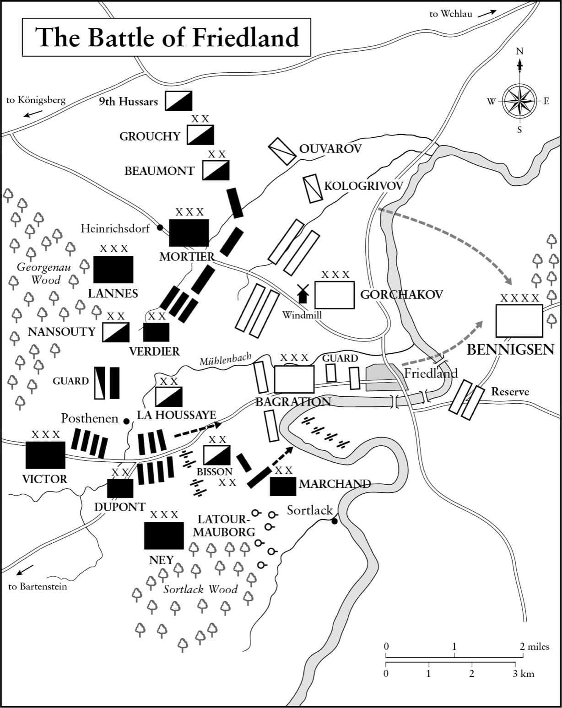

Một người cha mất đi những đứa con của mình sẽ không tìm thấy niềm vui trong chiến thắng. Khi trái tim lên tiếng, ngay cả vinh quang cũng không còn ảo tưởng.
• Napoleon nói về trận Eylau
Anh có thể làm những việc khác ngoài việc điều hành chiến tranh, nhưng trách nhiệm là trên hết.
• Napoleon viết cho Josephine, tháng Ba năm 1807
⚝ ✽ ⚝
Em yêu, chúng ta đã có một trận đánh lớn hôm qua”, Napoleon viết cho Josephine từ Eylau vào lúc 3 giờ sáng của đêm đầu tiên sau trận đánh, ngày 10 tháng Hai. “Chiến thắng ở bên anh, song anh đã mất rất nhiều người; tổn thất của kẻ thù còn đáng kể hơn, nhưng không thể an ủi được anh”. Tối đó, ông lại viết, “để em không thấy bất an”, lần này tuyên bố ông đã bắt được 12.000 tù binh với cái giá phải trả là 1.600 binh sĩ tử trận và khoảng 3 đến 4.000 người bị thương. Một trong những người tử trận, Tướng Claude Corbineau phụ tá của ông, từng là Quan giám mã của Josephine. “Anh thực sự rất thân thiết với người sĩ quan này, một người rất có năng lực”, ông viết, “cái chết của anh ta khiến anh đau buồn.
Đại quân đã tổn thất nặng nề tới mức không thể phát huy thắng lợi như đã làm sau trận Jena. Đại tá Alfred de Saint-Chamans, sĩ quan phụ tá của Soult, nhớ lại sau trận đánh, “Hoàng đế đi qua trước mặt binh lính; giữa những tiếng hô “Hoàng đế muôn năm!” tôi nghe thấy nhiều người lính hô “Hòa bình muôn năm!”, số khác “Hòa bình và Pháp muôn năm!”, có những người thậm chí còn hô “Bánh mì và hòa bình!” Đây là lần đầu tiên ông chứng kiến tinh thần quân đội “có chút dao động”, điều mà ông quy nguyên nhân cho “cuộc tàn sát Eylau”. Ngày hôm sau trận đánh, Napoleon tuyên bố trong một bản thông cáo rằng một con đại bàng đã bị mất, và nói “Hoàng đế sẽ trao cho tiểu đoàn đó một quân hiệu mới sau khi đơn vị này đoạt được một lá quân kỳ từ kẻ thù”. Lý do đơn vị này không bị nêu tên là vì trên thực tế có tới năm con đại bàng đã bị mất.(*)
Napoleon vẫn ở Eylau vào ngày 14 tháng Hai, viết thư cho Josephine: “Nơi này chồng chất những xác chết và người bị thương. Đây không phải là mặt đẹp đẽ nhất của chiến tranh; người ta khổ sở, và tâm hồn bị vò xé khi trông thấy nhiều nạn nhân đến thế”. Ông nhanh chóng trở nên quan ngại về việc thư của các sĩ quan gửi về Paris nhắc quá nhiều tới thiệt hại. “Họ biết về những gì xảy ra trong một đạo quân cũng nhiều như những người đi dạo trong vườn Tuileries biết về chuyện gì xảy ra trong nội các vậy”, ông viết cho Fouché. Sau đó, ông viết thêm thật nhẫn tâm: “Và việc có 2.000 người chết trong một trận đánh lớn thì có nghĩa gì chứ? Mỗi trận đánh của Louis XIV và Louis XV đều cướp đi nhiều sinh mạng hơn”. Điều này có thể được chứng minh là không đúng; Blenheim, Malplaquet, Fontenoy, và Rossbach cướp đi nhiều sinh mạng hơn, nhưng như thế không có nghĩa điều đó là đúng với mọi trận đánh trong các cuộc chiến tranh giành quyền thừa kế Tây Ban Nha và Áo cũng như Chiến tranh Bảy năm. Napoleon như thường lệ đang nói dối về con số tử trận tại Eylau, vốn lên tới gần 6.000, cùng khoảng trên 15.000 người bị thương.
Sau Eylau, còn diễn ra một cuộc xung đột đáng kể nữa tại Ostrolenka ngày 16 tháng Hai, và một trận nữa giữa Bernadotte và Lestocq vào cuối tháng Hai, ngoài ra cả hai bên đều lui về khu vực trú quân mùa đông của mình – quân Pháp dọc theo sông Passarge, quân Nga dọc theo sông Alle – cho tới khi mùa chiến dịch có thể bắt đầu trở lại vào giữa tháng Năm. Tất nhiên, điều này không có nghĩa là Napoleon nghỉ ngơi. Pierre Daru làm tổng quản cho Hoàng đế khi đi chiến dịch, và trong thư từ của ông ta từ tháng Ba năm 1807 có hàng chục lá thư lo lắng về việc quân đội thiếu tiền mặt, ngựa, bếp lò, thịt cừu, thịt bò, quân phục, vải may áo sơ mi, mũ, chăn, bột mì, bánh quy, bánh mì, và đặc biệt là giày và rượu mạnh. Daru đã làm phận sự của mình một cách tốt nhất như có thể, chẳng hạn báo cáo với Napoleon ngày 26 tháng Ba rằng quân đội có 231.293 đôi giày, song binh lính vẫn phải chịu khổ cực. Daru trưng thu 5.000 con ngựa từ tám thành phố Đức trong tháng Mười hai, trong đó 3.647 con được giao nộp vào cuối tháng. Napoleon được cập nhật thông tin về việc có bao nhiêu lúa mạch đen, lúa mì, cỏ khô, thịt, rơm, yến mạch, và bánh mì đã được trưng thu từ tỉnh nào vào thời gian nào, các con số được trình lên ông trong những bản danh sách rành mạch; tương tự, ông được báo cáo về số người đang điều trị trong 105 bệnh viện của mình ở Đức và Ba Lan. (Chẳng hạn, vào ngày 1 tháng Bảy, có 30.863 người Pháp, 747 người thuộc các đồng minh của Pháp, 260 người Phổ và 2.590 người Nga.) Quân đội cần có thời gian để nghỉ ngơi và hồi sức sau những gian khổ tột cùng của chiến dịch.
Khi Joseph cố gắng đặt công việc của Đạo quân Naples đang chiến đấu chống lại phiến quân Calabria ngang hàng với công việc của Đại quân, Napoleon lập tức không chấp nhận:
⚝ ✽ ⚝
Với Nga và Phổ vẫn đang trong tình trạng chiến tranh với mình, Napoleon cũng sử dụng thời gian để huy động một sư đoàn Bavaria gồm 10.000 quân, chiêu mộ 6.000 lính Ba Lan, điều tăng viện tới từ Pháp, Italy, Hà Lan, và gọi quân dịch năm 1808 sớm một năm. Eylau đã giáng vào huyền thoại bất khả chiến bại của ông một vết đen cần được xóa đi nếu muốn người Áo tiếp tục trung lập – nhất là khi vào cuối tháng Hai, Frederick William đã bác bỏ những điều kiện hòa bình khoan dung hơn nhiều so với những gì Duroc đã đề xuất với Hầu tước di Lucchesini, Đại sứ Phổ tại Paris, sau trận Jena.
Một chiến dịch tấn công không thể diễn ra vào mùa xuân cho tới khi thành phố cảng giàu có và được phòng thủ kiên cố Danzig (ngày nay là Gdánsk) thất thủ, vì nếu không người Nga có thể tung ra một cuộc tấn công vào sau lưng quân Pháp với sự giúp đỡ của Hải quân Hoàng gia Anh. Sau khi Victor bị bắt cóc tại Stettin ngày 20 tháng Một năm 1807 bởi 25 lính Phổ cải trang thành nông dân, Thống chế Lefebvre 52 tuổi tóc hoa râm được giao nhiệm vụ vây hãm Danzig. Khi ông ta chiếm được thành phố ngày 24 tháng Năm, qua đó đảm bảo an toàn cho sườn trái quân Pháp, Napoleon liền gửi cho ông ta một hộp sô-cô-la. Vị thống chế chẳng hề thấy ấn tượng cho tới khi mở nó ra, và thấy bên trong xếp đầy 300.000 franc tiền mặt. Một năm sau, Lefsebvre, một người cộng hòa đầy kiêu hãnh, từng phò tá cho Napoleon trong đảo chính 18 tháng Sương mù, trở thành Công tước xứ Danzig.
Trong khi tái xây dựng đạo quân của mình và chuẩn bị cho chiến dịch, Napoleon vẫn tiếp tục quản lý đế chế ở từng chi tiết nhỏ nhất. Vào cùng ngày ông biết tin đã chiếm được Danzig – trước tin này ông đã lệnh cho Clarke bắn đại bác chào mừng và cho hát các bài thánh ca Te Deum tại Paris – ông yêu cầu Lacépède, Tư lệnh Binh đoàn Danh dự, “viết một lá thư cho Hạ sĩ Bernaudat thuộc Trung đoàn bộ binh 13, ra lệnh cho anh ta không được uống rượu quá mức ảnh hưởng đến sức khỏe của mình. Không để huân chương vốn đã trao cho anh ta vì sự dũng cảm lại bị tước khỏi anh ta chỉ vì anh ta thích chút rượu vang. Bảo anh ta không được can dự vào những tình huống có thể hạ thấp giá trị huân chương anh ta đeo”. Tháng Tư năm 1807 có lẽ là tháng yên tĩnh nhất trong toàn bộ thời gian trị vì của ông, nhưng Napoleon vẫn viết tới 443 lá thư. Sống tại lâu đài Finkenstein với nhiều lò sưởi – “vì tôi hay thức giấc ban đêm, nên tôi thích thấy một ngọn lửa đang cháy” – ông đích thân tham dự một cuộc tranh cãi giữa Boutron người phụ trách nhà hát Opera Paris với Gromaire người phó của ông này, xem ai phải chịu trách nhiệm về việc đánh rơi cô ca sĩ Aubry từ đám mây nhân tạo trên sân khấu xuống làm cô bị gãy tay. “Ta luôn ủng hộ kẻ yếu thế”, Napoleon viết cho Fouché, đứng về phía Gromaire từ cách đó cả hơn nghìn kilomet.
Ngày 26 tháng Tư, Công ước Bartenstein khẳng định rằng Nga và Phổ sẽ tiếp tục chiến tranh, cuộc chiến tranh của Liên minh Thứ tư, mời Anh, Thụy Điển, Áo, và Đan Mạch gia nhập. Hai nước đầu trả lời đồng ý, Anh gia nhập vào tháng Sáu và gửi tiền như phần đóng góp của mình trong khi vẫn duy trì bao vây hải quân với thương mại Pháp. Thụy Điển – vẫn chưa tái lập hòa bình với Napoleon sau khi Liên minh Thứ ba chấm dứt tại Austerlitz – gửi tới một lực lượng nhỏ. Napoleon không bao giờ tha thứ cho Vua Gustav IV, người mà ông gọi là “một gã tâm thần nên là vua của Petites-Maison [một nhà thương điên ở Paris] hơn là của một nước Scandinavia can trường.”
•••
Đến cuối tháng Năm, Napoleon đã sẵn sàng: Danzig đã thuộc về ông, các bệnh binh đã được chuyển khỏi tiền tuyến, dự trữ hậu cần đã đủ cho tám tháng. Ông có 123.000 bộ binh, 30.000 kỵ binh và 5.000 pháo thủ trên chiến trường. Ông chọn ngày 10 tháng Sáu cho cuộc tấn công lớn của mình, nhưng cũng giống như hồi tháng Một, Bennigsen đã hành động trước, tấn công Ney tại Guttstadt ngày 5 tháng Sáu. “Ta rất lấy làm vui mừng khi thấy kẻ thù muốn tránh cho chúng ta phải tìm tới hắn”, Napoleon đùa cợt khi ông rời Finkenstein hôm sau trên một chiếc xe ngựa mui trần vì trời cực kỳ nóng bức. Hôm đó, ông đã ra lệnh cho tất cả các quân đoàn của mình xuất trận, hơn bao giờ hết nóng lòng muốn tìm kiếm một trận đánh quyết định có thể chấm dứt chiến dịch. Davout, người đã di chuyển hai sư đoàn từ Allenstein lên để đe dọa sườn trái quân Nga, cố ý để một liên lạc viên bị bắt mang theo tin tức sai lệch rằng ông ta có trong tay 40.000 quân để đánh tập hậu quân Nga, trong khi toàn bộ quân đoàn của ông ta thực sự chỉ có 28.891 người. Hôm sau, Bennigsen ra lệnh rút lui. Trong khi đó, Soult vượt sông Passarge bằng vũ lực và đẩy lùi cánh phải quân Nga.
Ngày 8 tháng Sáu, Napoleon tra vấn tù binh thuộc hậu quân của Bagration, họ khai với ông là Bennigsen đang hành quân tới Guttstadt. Có vẻ như ông ta sẽ tiếp chiến tại đó, song thay vì thế ông ta lại rút lui về doanh trại Heilsberg được bố phòng kiên cố. Napoleon dẫn đầu cùng Murat và Ney, theo sau là Lannes và Cận vệ Đế chế, còn Mortier ở sau họ một ngày hành quân. Davout bên cánh phải và Soult bên cánh trái; hệ thống quân đoàn vận hành trôi chảy. Bagration che chắn cho cuộc rút lui của Bennigsen, phá hủy các cây cầu và làng mạc sau lưng mình trong khi binh lính dưới quyền hành quân theo những tuyến đường dài bụi bặm dưới cái nóng gay gắt. Tin rằng có thể Bennigsen đang hướng tới Königsberg, ngày 9 tháng Sáu Napoleon quyết định tấn công lực lượng mà ông nghĩ chỉ là hậu quân địch. Trên thực tế đó là toàn bộ đạo quân Nga gồm 53.000 quân và 150 khẩu pháo.
Thành phố Heilsberg nằm trong vùng nơi sông Alle uốn cong tạo thành một chỗ hõm ở bờ trái, là một căn cứ tác chiến có công sự phòng thủ được quân đội Nga sử dụng. Một vài cây cầu nối sang khu ngoại ô bên bờ phải. Quân Nga đã xây dựng bốn tiền đồn lớn để bảo vệ các điểm vượt sông, cùng các công sự đắp đất bố trí rải rác, tại đó họ đã chiến đấu từ sáng sớm 10 tháng Sáu. Napoleon tới nơi lúc 3 giờ chiều, tức giận trước cái cách mà Murat và Soult đã tiến hành trận đánh, gây thiệt hại nặng nề với ba con đại bàng nữa bị mất. Có lúc giao chiến diễn ra gần Napoleon tới mức Oudinot đề nghị ông rời khỏi đó, nói rằng lính thủ pháo của mình sẽ đưa ông đi nếu Napoleon từ chối. “Vào lúc 10 giờ Hoàng đế đi ngang qua chúng tôi”, Trung úy Aymar-Olivier de Gonneville sĩ quan phụ tá trẻ nhớ lại, “được chào mừng bởi tiếng hoan hô nhưng ngài dường như không để ý, vẻ mặt ảm đạm và mất tinh thần. Sau này chúng tôi được biết ngài không có ý định tấn công quân Nga một cách thực sự như đã làm, và nhất là không muốn tung kỵ binh của mình vào trận. [Murat] đã bị trách cứ vì chuyện này, và đi theo sau Hoàng đế với thái độ rụt rè có thể thông cảm được”. Giao chiến mãi tới 11 giờ đêm mới kết thúc, sau đó là cảnh tượng ghê tởm khi những người dân bám theo quân đội của cả hai bên lột đồ trên người của tử sĩ và thương binh. Rạng đông hừng sáng trên một bãi chiến trường thực sự tang thương – hơn 10.000 quân Pháp và khoảng 6.000 quân Nga bị thương – và khi Mặt trời đứng bóng, cả hai đạo quân phải lùi lại trước mùi tử khí.
Cho dù chiếm được khá nhiều kho tàng và dự trữ hậu cần tại Heilsberg, nhưng Napoleon đã nhắm tới những nguồn dự trữ lớn hơn nhiều tại Königsberg. Với người Nga, để tới được Königsberg họ cần vượt sông Alle trở lại. Napoleon biết có một cây cầu tại thành phố hội chợ nhỏ Friedland (nay là Pravdinsk), vì thế ông phái Lannes tới đó trinh sát, trong khi tách đôi phần còn lại của đạo quân, giao cho Murat chỉ huy 60.000 quân – kỵ binh của ông ta, cộng với các quân đoàn của Soult và Davout – và phái đi chiếm Königsberg, còn ông đích thân chỉ huy 80.000 quân quay lại Eylau.
Ngày 13 tháng Sáu, tiền quân của Lannes báo cáo có một lượng lớn quân Nga tập trung tại Friedland, một thành phố cỡ trung bình nằm tại đoạn uốn cong hình chữ U của dòng sông, nên vị thống chế liền giao chiến theo học thuyết hệ thống quân đoàn rồi sau đó giữ vững vị trí trong suốt chín tiếng trước khi tăng viện tới. Đến 3:30 chiều, 3.000 kỵ binh thuộc tiền quân Nga vượt sông Alle và đánh bật quân Pháp ra khỏi thành phố. Bennigsen dường như cho rằng ông ta có thể vượt sông Alle vào hôm sau, đè bẹp Lannes và sau đó vượt sông trở lại, trước khi Napoleon có thể từ Eylau nằm cách Friedland 24 km về phía tây kịp tới nơi. Đánh giá thấp tốc độ của Napoleon không bao giờ là khôn ngoan, nhất là khi ông đang hành quân trên mặt đất đã bị Mặt trời mùa hè nung rắn lại.
Khúc cong của sông Alle vòng quanh Friedland, bao lấy thành phố từ phía nam và phía đông, trong khi một hồ nước tên là Millstream nằm sát thành phố về phía bắc. Sông Alle sâu và chảy xiết, các bờ sông cao trên 9 m. Phía trước thành phố là một đồng bằng màu mỡ rộng gần 3 km với lúa mì và lúa mạch đen mọc cao tới hông, kế sát một khu rừng rậm có tên Sortlack. Hồ Millstream cũng có các bờ dốc và tách vùng đất bằng phẳng làm đôi. Tháp chuông của Friedland cho một tầm nhìn tuyệt vời toàn cảnh chiến trường, và Bennigsen, ban tham mưu của ông ta cùng sĩ quan liên lạc Anh là Đại tá John Hely-Hutchinson đã khôn ngoan leo lên đó. Song họ đã không nhận ra rằng ba cây cầu phao Bennigsen cho bắc qua sông để bổ sung cho cây cầu đá trong thành phố nằm cách quá xa phía sau cánh trái của ông ta, và nếu những cây cầu bị phá hủy hay tắc nghẽn thì Friedland, nằm ở chỗ uốn cong của một hồ nước có hình gần như ách bò, sẽ trở thành một cái bẫy giết người khổng lồ.
Trong khoảng 2 tới 3 giờ sáng Chủ nhật, 14 tháng Sáu – ngày kỷ niệm trận Marengo – Oudinot tới khu vực đất bằng phẳng đằng trước làng Posthenen. Là một người lính chân chính, mạnh mẽ và đáng gờm, được thuộc cấp yêu mến, ông ta đã sống sót qua tổng cộng 34 vết thương trong sự nghiệp của mình, mất vài chiếc răng trong chiến dịch năm 1805 và sắp sửa mất một phần của một bên tai. Là đứa con duy nhất trong chín người con sống được đến tuổi trưởng thành, bản thân ông ta có 10 đứa con, sưu tập tẩu hút thuốc bằng đất nung, là một họa sĩ nghiệp dư, và tiêu khiển cùng Davout trong các buổi tối của chiến dịch này bằng trò thổi tắt nến với những phát súng ngắn. Oudinot lúc này đã điều quân của mình vào rừng Sortlack, và những cuộc đấu súng và đấu pháo dữ dội diễn ra dọc theo chiến tuyến. Khi vị chỉ huy kỵ binh tài năng có xuất thân quý tộc, Tướng Emmanuel de Grouchy, tới nơi cùng một sư đoàn long kỵ Pháp, đã giúp Lannes, người lúc đó cũng hội quân cùng Trung đoàn Khinh kỵ Saxon, có đủ người để đối đầu với khoảng 46.000 quân Nga cho tới khi Napoleon đến nơi.

Bennigsen điều một lượng lớn quân vượt sông Alle vào Friedland, và ra lệnh cho họ bắt đầu tản ra về phía Heinrichsdorf, nơi họ có thể đe dọa quân Pháp từ phía sau. Quân giáp kỵ của Nansouty được Lannes điều về phía Heinrichsdorf và đẩy lui những đơn vị Nga đi đầu. Grouchy sau đó nhanh chóng vận động lên từ Posthenen, tấn công tư bên sườn và đột phá được vào trận địa pháo Nga, chém gục các pháo thủ không được bảo vệ. Đến lượt lực lượng kỵ binh Pháp lúc đó đã trở nên hỗn loạn bị phản kích, song tới 7 giờ sáng Grouchy đã ổn định được chiến tuyến Pháp ở phía đông Heinrichsdorf.
Trong cuộc hỗn chiến diễn ra tiếp theo, Thống chế Lannes, một người Gascon mưu lược và linh hoạt, có thể phát huy sở trường của mình. Được che chắn bởi một đội hình khinh binh được bố trí dày đặc khác thường trên cánh đồng mùa màng mọc cao, ông ta liên tục di chuyển các đơn vị nhỏ bộ binh và kỵ binh của mình lên xuống theo chiến tuyến và ra vào khu rừng, nhằm phóng đại quy mô lực lượng của mình, trong khi ông ta vẫn chỉ có 9.000 bộ binh và 8.000 kỵ binh để kìm chân sáu sư đoàn Nga đã vượt sông Alle. Thật may, đúng lúc Bennigsen triển khai lực lượng và tấn công, thì quân đoàn của Mortier xuất hiện trên chiến trường và tiến vào Heinrichsdorf vừa đúng lúc, không để cho bộ binh Nga chiếm được nơi này. Để lại ba tiểu đoàn lính thủ pháo của Oudinot trong làng, Dupas triển khai quân sang bên phải làng. Sư đoàn Ba Lan của Mortier sau đó vận động vào chiến trường, và ba trung đoàn Ba Lan của Tướng Henri Dombrowski di chuyển vào vị trí, yểm trợ pháo binh tại Posthenen. Trong cuộc chiến khủng khiếp nơi rừng Sortlack, sư đoàn của Oudinot đã hy sinh đầy ấn tượng nhằm kìm chân bộ binh Nga. Đến 10 giờ sáng, Lannes có thêm sư đoàn của Tướng Jean-Antoine Verdier tới hội quân, đưa tổng lực lượng của ông ta lên 40.000 quân.
Bennigsen nhận ra là Napoleon vắng mặt – ông đang phi nước đại nhanh nhất có thể tới Friedland – và đang tung thêm ngày càng nhiều quân tới chiến trường để đối đầu với mình, nên ông ta đã thay đổi kỳ vọng của mình về kết cục. Giờ đây, Bennigsen chỉ hy vọng giữ vững được chiến tuyến của mình tới cuối ngày để có thể thực hiện một cú đào thoát nữa. Song vào giữa mùa hè, màn đêm buông xuống rất muộn tại vĩ độ này; và vào giữa trưa, sau khi đã phi nước đại từ Eylau trên con ngựa nòi Ả rập của mình trong khi đội hộ tống phải cố hết sức để theo kịp, Napoleon xuất hiện trên chiến trường. Cưỡi một con ngựa bị thương, quân phục rách tươm vì những vết đạn, Oudinot tới gần và cầu khẩn Hoàng đế: “Hãy cho thần tăng viện, và thần sẽ hất quân Nga xuống sông!” Từ trên ngọn đồi nằm sau Posthenen, Napoleon lập tức nhận ra sai lầm chiến thuật lớn của Bennigsen. Vùng đất bằng bị hồ Millstream chia làm đôi đồng nghĩa với việc cánh trái của Bennigsen có nguy cơ bị đẩy xuống sông.
Trong khi Napoleon và Oudinot chờ tăng viện, Napoleon cho phép tạm ngừng trận đánh, tin chắc Bennigsen không thể sửa chữa được sai lầm kể cả nếu ông ta có nhận ra đi nữa. Binh sĩ cả hai bên đều hoan hỉ vì có cơ hội để tìm bóng mát và nước uống. Nhiều người đã điên cuồng vì khát, bởi họ đã trải qua hàng giờ phải dùng răng xé các túi đựng diêm sinh trong một ngày giữa hè ngột ngạt không một gợn mây, với nhiệt độ lên tới 30 độ C trong bóng râm. Napoleon ngồi trên một chiếc ghế gỗ đơn sơ và ăn trưa bằng bánh mì đen trong tầm bắn của đại bác Nga. Khi những người hầu cận nài xin ông lui ra xa, ông nói: “Chúng sẽ ăn tối còn ít thoải mái hơn ta ăn trưa”. Với những người lo rằng đã quá muộn để tấn công, và rằng cuộc tấn công nên được hoãn sang hôm sau, ông trả lời: “Chúng ta sẽ không tóm được kẻ thù đang phạm sai lầm như thế này hai lần đâu”. Người lính-nhà ngoại giao Jacques de Norvins quan sát Napoleon đi đi lại lại, dùng roi ngựa quất vào những ngọn cỏ dại mọc cao và nói với Berthier: “Ngày của Marengo, ngày của chiến thắng!” Napoleon luôn rất nhạy bén với khả năng tuyên truyền của các ngày kỷ niệm, đồng thời cũng mê tín.
Đến 2 giờ chiều, ông truyền lệnh tái chiến lúc 5 giờ chiều. Ney sẽ tấn công về phía Sortlack; Lannes sẽ tiếp tục giữ vững trung tâm, còn lính thủ pháo của Oudinot sẽ dịch sang trái để thu hút sự chú ý về phía họ và xa khỏi Ney; Mortier sẽ chiếm và giữ Heinrichsdorf, với Victor và Cận vệ Đế chế làm dự bị ở trung tâm. Trên tháp chuông nhà thờ, Bennigsen và ban tham mưu của mình quan sát, như Hely-Hutchinson ghi lại, giữa lúc “đường chân trời dường như được quàng một chiếc đai thép lấp lánh sáng”. Bennigsen bắt đầu ra lệnh rút lui, nhưng ông ta phải hủy lệnh ngay lập tức vì đã quá muộn, bởi rút lui vào lúc này là việc quá nguy hiểm, khi trước mặt là đối phương đang tiến lại.
Lúc 5 giờ chiều, ba loạt đạn của 20 khẩu pháo báo hiệu cuộc tấn công của Đại quân bắt đầu. 10.000 bộ binh của Ney tiến qua rừng Sortlack và quét sạch hoàn toàn khu rừng vào 6 giờ chiều. Các đội hình hàng dọc của ông ta sau đó tiến về phía cánh trái quân Nga. Sư đoàn của Tướng Jean-Gabriel Marchand tiến vào làng Sortlack và đẩy nhiều quân địch phòng thủ tại đây xuống sông theo đúng nghĩa đen. Sau đó, ông này tiến về phía tây dọc theo bờ sông, cô lập bán đảo Friedland, nhốt chặt quân Nga bên trong. Pháo binh Pháp bắn vào họ hầu như không trượt. Napoleon sau đó điều quân đoàn của Victor tiến lên theo tuyến đường Eylau về phía Friedland từ hướng tây nam.
Khi quân đoàn đã kiệt sức của Ney bắt đầu lui lại, Sénarmont chia 30 khẩu pháo của mình thành hai khẩu đội gồm 15 khẩu, với 300 viên đạn cho mỗi khẩu dã pháo và 220 viên cho mỗi lựu pháo. Trong lúc những cây kèn hiệu thổi bài “Action Front” thì các khẩu đội này được kéo nhanh lên phía trước, rồi tháo pháo khỏi xe kéo và bắn, lúc đầu từ cự ly 550 m, rồi 270 m, rồi 140 m, và cuối cùng là 55 m chỉ bằng đạn chùm. Trung đoàn Cận vệ Ismailovsky và Thủ pháo Pavlovsky của Nga cố gắng tấn công các khẩu đội, song khoảng 4.000 người đã ngã gục dưới làn đạn của đối phương trong chừng 25 phút. Cả một đợt xung phong của kỵ binh bị tiêu diệt hoàn toàn bởi hai loạt đạn chùm. Cánh trái quân Nga bị tiêu diệt hoàn toàn, bị mắc kẹt và phải quay lưng vào sông Alle. Hành động của Sénarmont trở thành nổi tiếng trong sách giáo khoa quân sự như một “cuộc xung phong pháo binh”, cho dù các pháo thủ của ông ta bị thương vong tới 50%. Quân đoàn được tái tổ chức của Ney, do Trung đoàn bộ binh 59 dẫn đầu, chiến đấu xuyên qua các đường phố Friedland từ phía tây, kiểm soát thành phố lúc 8 giờ tối. Quân Nga bị đẩy lùi về phía các cây cầu đang bốc cháy, nhiều binh lính bị chết đuối trong lúc tìm cách vượt sông Alle.
Vào thời điểm đó, các sư đoàn của Lannes và Mortimer tràn vào vùng đất bằng phẳng, còn các đơn vị Nga ở bên phải Friedland đơn giản là bị đẩy xuống sông. Nhiều lính Nga chiến đấu đến cùng bằng lưỡi lê, cho dù 22 chi đội kỵ binh thoát được theo bờ trái sông Alle. Cái nóng, sự kiệt sức, màn đêm buông xuống và cuộc cướp phá thành phố tìm thức ăn đều được viện ra để giải thích cho lý do vì sao đã không có cuộc truy đuổi quân Nga nào diễn ra sau trận Friedland giống như trận Jena. Cũng có khả năng là Napoleon cảm thấy một cuộc tàn sát quy mô lớn có thể khiến cho Alexander khó đi tới đàm phán hơn, và vào thời điểm đó ông ta đã rất muốn hòa bình. “Binh lính của họ nhìn chung là giỏi”, ông ta viết cho Cambacérès, điều mà cho tới lúc đó ông ta đã chưa hề nhận ra, và đáng lẽ tốt hơn nên nhớ đến năm năm sau đó.
Về mặt tập trung nỗ lực, Friedland là chiến thắng ấn tượng nhất của Napoleon sau Austerlitz và Ulm. Với cái giá phải trả là 11.500 người tử trận, bị thương và mất tích, ông đã hoàn toàn đánh bại quân Nga, tổn thất của họ được ước tính vào khoảng 20.000 – hay 43% tổng quân số của họ – dù chỉ mất khoảng 20 đại bác. Hàng trăm bác sĩ phẫu thuật của Percy đã phải làm việc thâu đêm, và một viên tướng sau này nhớ lại “các bãi cỏ vứt đầy những chân tay bị cắt lìa khỏi thân mình, đó là những nơi ghê rợn dành cho việc cắt xẻo và cưa chân tay mà quân đội gọi là cứu thương.”
Ngày hôm sau trận đánh, Lestocq triệt thoái khỏi Königsberg và Napoleon phát hành một bản thông cáo kinh điển:
⚝ ✽ ⚝
Ngày 19 tháng Sáu, Sa hoàng Alexander cử Công tước Dmitry Lobanov-Rostovsky tới đề nghị đình chiến, trong khi quân Nga rút lại qua sông Niemen và đốt cây cầu tại thành phố Phổ cuối cùng ở Tilsit (nay là Sovetsk), nơi Napoleon đến vào lúc 2 giờ chiều. Người Phổ, vốn không có khả năng tiếp tục chiến tranh mà không có sự giúp đỡ của Nga, giờ đây đương nhiên sẽ phải làm theo động thái ngoại giao của Sa hoàng. Một tháng đình chiến được nhất trí sau hai ngày đàm phán, và đến buổi tối thứ ba, Napoleon mời Lobanov-Rostovsky ăn tối, uống mừng sức khỏe Sa hoàng và đề nghị lấy sông Vistula làm biên giới tự nhiên giữa hai đế chế, qua đó ngụ ý rằng ông sẽ không đòi hỏi bất cứ vùng lãnh thổ Nga nào nếu có thể đạt được một hiệp ước hòa bình toàn diện. Trên cơ sở đó, các thu xếp được nhanh chóng thực hiện để Napoleon và Alexander gặp nhau. Nhằm thiết lập một địa bàn trung lập, một căn lều được Tướng Jean-Ambroise Baston de Lariboisière, chỉ huy Pháo binh Cận vệ, dựng lên trên một chiếc bè ở giữa sông Niemen, được cột chắc chắn vào cả hai bờ sông tại Piktupönen, đường ranh giới ngừng bắn chính thức gần Tilsit. “Sẽ có ít cảnh tượng thú vị hơn”, Napoleon viết trong bản thông cáo chiến dịch số 85 của mình. Quả thực đã có những đám đông binh lính xúm lại bên hai bờ sông để theo dõi cuộc gặp gỡ. Mục đích của nó, Napoleon nhắc lại, không gì ngoài việc “đem lại yên bình cho thế hệ hiện tại”. Sau tám tháng chiến dịch, ông nóng lòng muốn đạt được hòa bình, trở về Paris và tiếp tục chỉ đạo những cải cách sâu rộng của mình trong nhiều khía cạnh đời sống Pháp.
•••
Cuộc hội kiến giữa hai hoàng đế diễn ra vào Thứ năm, 25 tháng Sáu năm 1807, đáng chú ý ở nhiều điểm bên cạnh địa điểm lạ lùng của nó; đây là một trong những cuộc gặp thượng đỉnh lớn của lịch sử. Cho dù tình bằng hữu chân chính là không thể có ở đỉnh cao quyền lực, song Napoleon đã nỗ lực hết sức để gây thiện cảm với vị quân chủ chuyên chế 29 tuổi của Nga, và thiết lập mối quan hệ cá nhân nồng ấm với vị Hoàng đế này bên cạnh mối quan hệ công việc hiệu quả. Các hiệp ước hòa bình được thiết lập từ các cuộc đàm phán – ký kết với Nga ngày 7 tháng Bảy và Phổ hai ngày sau đó – thực tế đã chia châu Âu thành các vùng ảnh hưởng của Pháp và Nga.
Napoleon tới chỗ chiếc bè trước, và khi Alexander lên bè, mặc bộ quân phục màu lục sẫm của Cận vệ Preobrazhensky, hai người đã ôm hôn nhau. Những lời đầu tiên của Sa hoàng là “Tôi sẽ hỗ trợ ngài chống lại Anh”. (Một phiên bản ít phù hợp hơn là, “Tôi căm ghét người Anh cũng nhiều như ngài”.) Alexander đã không thể hiện ác cảm tương tự với vàng của Anh mà ông ta đã sẵn sàng nhận trong nhiều năm, nhưng cho dù câu mà Sa hoàng nói là gì đi nữa, Napoleon lập tức nhận ra một thỏa thuận quy mô lớn là có thể – thực vậy, như ông nói sau này, “Những lời đó thay đổi mọi thứ”. Sau đó, họ bước vào phòng khách sang trọng của căn lều và trò chuyện riêng trong hai tiếng. “Anh vừa gặp Hoàng đế Alexander”, Napoleon viết cho Josephine. “Anh rất hài lòng với ông ấy; ông ấy là một hoàng đế trẻ tuổi rất tuấn tú và đàng hoàng; ông ấy thông minh hơn người ta nghĩ.”
Cho dù cửa của căn lều trên bè (được Napoleon đánh giá là “đẹp”) được trang trí bằng hình các con đại bàng của Nga và Pháp, sơn những chữ cái đầu lớn “N” chỉ Napoleon và “A” chỉ Alexander, nhưng không có “FW” cho Frederick William của Phổ, người có mặt tại Tilsit nhưng bị cư xử để cảm thấy rõ thân phận ông vua nhược tiểu. Vào ngày thứ nhất, ông ta không được mời lên bè mà phải đợi bên bờ sông, khoác một chiếc áo choàng Nga trong khi số phận vương quốc mình được định đoạt bởi hai người không hề có chút thiện cảm rõ rệt nào với nó. Ông ta được phép lên bè vào ngày thứ hai, 26 tháng Sáu, để Alexander có thể giới thiệu ông ta với Napoleon, và khi đó với ông ta đã rõ ràng là mối liên minh Pháp-Nga sẽ được hình thành với cái giá phiền muộn dành cho Phổ. Vào cuối cuộc hội kiến ngày thứ hai trên bè, lúc Alexander tiến vào thành phố Tilsit lúc 5 giờ chiều, ông ta được 100 khẩu pháo bắn chào mừng, được đích thân Napoleon ra đón rồi được thu xếp tới ở tại tòa nhà tốt nhất trong thành phố. Khi Frederick William tới, không có đại bác chào mừng, không đón tiếp, và ông ta được thu xếp chỗ ở tại nhà người chủ cối xay địa phương. Vị thế của ông ta còn tệ hơn bởi thực tế là cả Napoleon lẫn Alexander đều coi ông ta là một kẻ thông thái rởm, đầu óc hẹp hòi, tẻ nhạt bởi khả năng nói chuyện hạn chế. “Ông ta giữ tôi nửa tiếng để nói với tôi về bộ quân phục và những cái cúc áo của tôi”, Napoleon nhớ lại, “nên cuối cùng tôi đành nói: ‘Ngài phải hỏi thợ may của ta.’” Các tối sau đó, ba người sẽ ăn tối sớm, chào nhau, rồi sau đó Alexander sẽ tới phòng của Napoleon để trò chuyện rất lâu tới tận khuya mà Frederick William không biết.
Cho dù có nhiều cuộc duyệt đội cận vệ lẫn nhau, trao đổi huân chương và các phần thưởng danh dự – Napoleon trao huân chương Binh đoàn Danh dự cho một lính thủ pháo Nga theo đề nghị của Alexander – cùng những lời chúc tụng nhau tại các buổi đại tiệc, nhưng chính những cuộc trò chuyện lúc đêm khuya về triết học, chính trị và chiến lược này đã định hình mối quan hệ giữa Napoleon và Sa hoàng. Trong những lá thư gửi em gái mình, Alexander viết về những cuộc trò chuyện đôi lúc kéo dài bốn tiếng liên tục này. Họ thảo luận về Hệ thống Lục địa, kinh tế châu Âu, tương lai Đế chế Ottoman và làm cách nào để đưa Anh tới bàn đàm phán. “Khi tôi ở Tilsit, tôi thường hay chuyện vãn”, Napoleon nhớ lại, “gọi người Thổ là lũ man rợ, và nói rằng cần tống khứ chúng khỏi châu Âu, song tôi không bao giờ có ý định làm vậy, vì… không phù hợp với lợi ích của Pháp nếu Constantinople nằm trong tay của Áo hay Nga”. Tại một trong những cuộc thảo luận lạ lùng hơn của họ về hình thức chính quyền tốt nhất, nhà độc tài Alexander ủng hộ một nền quân chủ bầu chọn, trong khi Napoleon – người ít nhất cũng được xác nhận ngôi vị hoàng đế bằng một cuộc trưng cầu dân ý – lại ủng hộ nền quân chủ chuyên chế. “Vì ai thích hợp để được bầu đây?” Napoleon hỏi. “Một Caesar, một Alexander chỉ xuất hiện một lần mỗi thế kỷ, vì thế cuộc bầu chọn rõ ràng là một vấn đề mang tính cơ hội, và sự kế vị chắc chắn là đáng giá hơn một lần gieo xúc xắc.”
Alexander đang bị sức ép phải lập lại hòa bình từ mẹ ông, Thái hậu Maria Feodorovna, người cảm thấy đã có quá đủ máu người Nga phải đổ ra vì nhà Hohenzollern, và từ em trai ông ta là Constantine, người công khai ngưỡng mộ Napoleon. Mặc cả mà ông ta đưa ra tại Tilsit không hề phản ánh mức độ thất bại của mình; Phổ đã trả giá gần như toàn bộ, còn Nga không mất lãnh thổ nào ngoài quần đảo Ionia (bao gồm Corfu, hòn đảo được Napoleon gọi là “chìa khóa của Adriatic”). Napoleon đảm bảo các quốc gia Đức do họ hàng gần của Sa hoàng trị vì như Oldenburg sẽ không bị ép buộc gia nhập Liên bang sông Rhine. Alexander đồng ý triệt thoái khỏi Moldavia và Wallachia mới chiếm được trước đó không lâu từ tay người Thổ (trước đó chúng chưa bao giờ thuộc về Nga), và ông ta được rảnh tay tấn công Phần Lan, lãnh thổ đang thuộc về Thụy Điển. Nhượng bộ đáng kể duy nhất mà Alexander phải thực hiện ở Tilsit là hứa gia nhập Hệ thống Lục địa, điều Napoleon hy vọng sẽ làm gia tăng sức ép buộc Anh phải tìm kiếm hòa bình. Trong khi đó, Alexander mời Napoleon tới St Petersburg. “Ta biết ông ấy rất sợ lạnh”, ông ta nói với Đại sứ Pháp, “nhưng bất chấp điều đó ta vẫn sẽ không miễn cho ông ấy chuyến đi. Ta sẽ ra lệnh sưởi ấm phòng của ông ấy nóng rực như Ai Cập”. Ông ta cũng ra lệnh đốt hết sách chống Napoleon tại Nga, nơi đồng minh mới của ông ta giờ đây chỉ được phép nhắc đến trên văn bản là “Napoleon” chứ không phải là “Bonaparte.”
Hoàn toàn trái ngược sự rộng rãi thể hiện với Nga, Phổ phải chịu những trừng phạt nghiệt ngã. “Tôi đã gây ra sai lầm tai hại nhất ở Tilsit”, Napoleon sau này nói. “Đáng lẽ tôi phải truất ngôi Vua Phổ. Tôi đã có một thoáng do dự. Tôi chắc là Alexander hẳn sẽ không phản đối việc đó, miễn là tôi không giành lấy lãnh thổ của Vua Phổ cho mình”. Alexander lấy vùng lãnh thổ Ba Lan về phía đông Bialystok từ tay Phổ – một hành động khó có thể coi là của đồng minh – nhưng những cú đòn nặng nề khác đều tới từ Napoleon. Từ những tỉnh thuộc Phổ chiếm được trong các cuộc phân chia Ba Lan lần thứ hai và ba, ông thành lập Đại Công quốc Warsaw, khiến người Ba Lan hy vọng đây là bước đầu trên con đường tái lập vương quốc của riêng mình, cho dù nó không có bất cứ đại diện ngoại giao nào ở nước ngoài, còn Đại Công tước của nó là một người Đức, Frederick Augustus xứ Saxony, cùng một nghị viện không quyền lực. Lãnh thổ Phổ ở phía tây sông Elbe tạo thành vương quốc mới Westphalia, Cottbus được trao cho Saxony, và một khoản bồi thường chiến tranh lớn 120 triệu franc được áp đặt. Để trả khoản tiền này, Frederick William phải bán đất và tăng gánh nặng thuế suất tổng thể từ 10% giá trị tài sản quốc gia lên 30%. Phổ buộc phải gia nhập Hệ thống Lục địa và không được phép đánh thuế trên nhiều tuyến đường thủy như sông Netze và kênh đào Bromberg. Joseph được công nhận là vua của Naples, Louis là vua của Hà Lan, còn Napoleon là người bảo hộ của Liên bang sông Rhine, đồng thời các doanh trại đồn trú Pháp được duy trì ở các pháo đài trên các sông Vistula, Elbe, và Oder. Phổ bị giảm dân số xuống còn 4,5 triệu người (bằng nửa dân số trước chiến tranh), lãnh thổ chỉ còn hai phần ba, và được phép duy trì một quân đội chỉ gồm 42.000 quân; trên gần như toàn bộ lãnh thổ nằm giữa sông Rhine và sông Elbe “tất cả quyền thực tế và có thể” của Vương quốc Phổ “sẽ bị xóa bỏ vĩnh viễn”. Vua Saxony thậm chí sẽ có quyền dùng các tuyến đường trên đất Phổ để điều quân tới Đại Công quốc Warsaw. Bằng cách áp đặt những điều sỉ nhục này lên chắt của Frederick Đại đế, Napoleon đảm bảo rằng Phổ sẽ mãi mãi cảm thấy thù hận, nhưng ông tính toán rằng mưu toan trả thù của Áo với Hiệp ước Pressburg và Phổ với Tilsit có thể bị chặn đứng bởi tình hữu nghị mới của ông với Nga.
Khi bắt đầu đạt tới đỉnh cao quyền lực của mình, chiến lược của Napoleon là đảm bảo rằng, dù ông luôn phải đếm xỉa tới sự thù địch từ Anh, sẽ không có thời điểm nào cả ba cường quốc lục địa gồm Nga, Áo, và Phổ sẽ đồng thời liên kết chống lại ông. Như vậy, ông cần chơi quân bài nước này chống lại các nước khác, và trong khả năng tối đa có thể, chống lại cả Anh. Ông sử dụng sự thèm muốn Hanover của Phổ, sự mất khả năng chiến đấu của Nga sau Friedland, sự liên kết bằng hôn nhân với Áo, sự khác biệt giữa Nga và Áo với Đế chế Ottoman, và sự sợ hãi tính quật khởi của Ba Lan mà cả ba cường quốc kia đều cảm thấy, nhằm tránh phải chiến đấu đồng thời với cả bốn cường quốc. Việc ông đạt được điều này trong một thập kỷ sau khi Hiệp ước Amiens đổ vỡ, bất chấp chuyện mọi cường quốc khác rõ ràng đều dè chừng gã khổng lồ ở châu Âu, là một minh chứng cho năng lực chính trị của ông. Việc phân chia châu Âu trên thực tế thành các vùng ảnh hưởng của Pháp và Nga chính là thời khắc định hình nên chiến lược này.
Một buổi tối cuối đời mình, khi ông đang bị lưu đày trên đảo St Helena, cuộc trò chuyện quay sang thời điểm Napoleon từng hạnh phúc nhất trong đời mình. Những người quanh ông đã đưa ra những thời điểm khác nhau. “Phải, ta hạnh phúc khi ta trở thành Tổng tài Thứ nhất, hạnh phúc khi ta kết hôn, và hạnh phúc khi Vua La Mã ra đời”, ông đồng ý, nhắc tới thời điểm con trai mình ra đời sau này. “Nhưng rồi ta đã không cảm thấy thật sự tin vào sự vững chắc về vị thế của ta. Có lẽ ta đã hạnh phúc nhất tại Tilsit. Ta vừa vượt qua rất nhiều thăng trầm, rất nhiều lo âu, như Eylau chẳng hạn; và ta thấy mình chiến thắng, đưa ra luật lệ, khiến các hoàng đế và vua chúa phải khuất phục trước ta”. Đấy là khoảnh khắc khôn ngoan để chọn lựa.
•••
Khi Hoàng hậu Louise của Phổ tới Tilsit ngày 6 tháng Bảy, chỉ ba ngày trước khi Hiệp ước Pháp-Phổ được ký kết, bà đã có cuộc gặp kéo dài hai tiếng với Napoleon, tại đó Hoàng hậu xin trả lại Magdeburg bên bờ tây sông Elbe. Bà là một phụ nữ cực kỳ hấp dẫn, tới mức vào năm 1795 bức tượng của bà cùng người em gái Frederike do Johann Gottfried Schadow tạc bị coi là quá gợi dục để có thể trưng bày công khai. (Napoleon chỉ nhận xét rằng Hoàng hậu “đẹp như có thể trông đợi ở tuổi 35”.) Thuật lại cuộc gặp giữa họ với Berthier, ông viết, “Hoàng hậu Phổ xinh đẹp đã khóc thực sự”, sau đó ông thêm, “Bà ấy tin rằng ta đi chừng ấy đường đất tới đây chỉ để ngắm đôi mắt đẹp của mình”. Ông hoàn toàn ý thức được tầm quan trọng chiến lược của Magdeburg từ những tìm hiểu của mình về các chiến dịch của Gustavus Adolphus, và không bao giờ có khả năng ông lại làm điều gì đó phù phiếm kiểu như từ bỏ một thành trì quân sự vì gục ngã trước một bà hoàng mau nước mắt.(*) Sau này, ông so sánh việc Louise nài nỉ về Magdeburg với việc Chimène cầu xin “theo phong cách bi kịch” cho cái đầu của Bá tước Rodrigue trong vở kịch Le Cid của Corneille, “‘Bệ hạ! Công lý! Công lý! Magdeburg!’ Cuối cùng để làm bà ấy ngừng lại, ta xin bà ấy ngồi xuống, vì biết rằng điều này có khả năng tốt hơn trong việc chấm dứt một cảnh bi kịch, bởi khi ngồi thì việc kéo dài màn cầu khẩn sẽ trở thành hài kịch”. Ông cho là trong suốt bữa tối vào tối đó, tất cả những gì bà nói đều là về Magdeburg, và sau khi chồng bà cùng Alexander đã rời bàn ăn, bà vẫn tiếp tục nài nỉ. Napoleon đưa cho bà một bông hồng. “Vâng”, bà nói, “nhưng cùng với Magdeburg!” “Ờ! Thưa bà”, ông đáp, “ta mới là người đang đưa bông hồng cho bà, chứ không phải bà đưa cho ta.”
Thay vì thế, Magdeburg trở thành một phần của Westphalia, một vương quốc mới có diện tích 2.800 km² được thành lập từ lãnh thổ của Brunswick và Hesse-Cassel, cũng như lãnh thổ Phổ nằm ở phía tây sông Elbe, sau này được thêm một số vùng của Hanover. Tuy nhiên, với vương quốc mới có tầm quan trọng chiến lược này, Napoleon đã đưa một gã trai lên làm vua, kẻ chưa làm được gì trong 22 năm tuổi đời của mình ngoài việc nghỉ vắng mặt không phép tại Mỹ, thực hiện một cuộc hôn nhân hấp tấp mà mới chỉ được hủy hôn bán hợp pháp, rồi sau đó phụng sự ở mức hoàn thành trách nhiệm (nhưng không hơn) khi được giao chỉ huy lực lượng Bavaria và Württemberg trong chiến dịch vừa qua. Jérôme không có một lý lịch đủ thích hợp cho một vị quân vương, song Napoleon tiếp tục cảm thấy ông có thể trông cậy vào gia đình mình nhiều hơn vào bất cứ ai khác – bất chấp những dấu hiệu rõ ràng về điều ngược lại từ chuyện lưu vong của Lucien, cuộc hôn nhân của Jérôme, sự yếu đuối của Joseph ở Naples, các vụ ngoại tình ngang ngược của Pauline, và việc Louis nhắm mắt làm ngơ cho người Anh buôn lậu vào Hà Lan.
Napoleon muốn Westphalia trở thành một hình mẫu cho phần còn lại của Đức, động viên các quốc gia Đức khác gia nhập Liên bang, hay ít nhất nằm ngoài vòng ảnh hưởng của Phổ và Áo. “Điều cốt yếu là thần dân của em được tận hưởng tự do, bình đẳng và phúc lợi mà người Đức chưa hề biết đến”, ông viết cho Jérôme ngày 15 tháng Mười một, gửi cho em trai một bản hiến pháp cho vương quốc mới và tiên đoán rằng sẽ không ai muốn quay lại với sự cai trị của Phổ sau khi họ “đã nếm trải lợi ích của một nền quản lý khôn ngoan và tự do”. Ông ra lệnh cho Jérôme “tuân theo nó một cách trung thành… Những lợi ích của Bộ luật Napoleon, việc xử án công khai, việc thiết lập các bồi thẩm đoàn, trên hết sẽ là nét đặc trưng cho thời trị vì của em… Ta trông cậy vào hiệu quả của chúng… còn hơn vào những chiến thắng quân sự lớn lao nhất”. Sau đó, thật mỉa mai nếu xét tới người mà ông đang viết thư cho, khi ông tán dương những hiệu quả của việc trọng dụng nhân tài: “Dân chúng Đức đang nóng lòng chờ đợi khoảnh khắc khi những người không xuất thân từ quý tộc nhưng tài năng có quyền bình đẳng để được xem xét giao phó công việc; sự bãi bỏ tất cả chế độ nông nô cũng như những ngăn cách giữa dân chúng và vị quân chủ của họ”. Lá thư này được viết không phải để công bố, dẫu vậy nó vẫn đại diện cho những lý tưởng cao đẹp nhất của Napoleon. “Người dân Đức, cũng như người dân Pháp, Italy và Tây Ban Nha, muốn các giá trị bình đẳng và tự do”, ông viết. “Ta đã đi đến chỗ tin rằng gánh nặng đặc quyền là trái với quan điểm chung. Hãy là một vị vua lập hiến.”
Như ông từng làm với Joseph, Louis, và Eugène, Napoleon liên tục phê phán Jérôme, thậm chí có lần khiển trách cậu em vì hài hước quá trớn: “Lá thư của em quá dí dỏm. Em không cần sự dí dỏm trong thời chiến. Em cần chính xác, thể hiện được nghị lực và sự đơn giản”. Dù không ai trong các anh em trai của ông trở thành những nhà cai trị có năng lực, nhưng Napoleon đã không thể dừng được những nỗ lực thử nghiệm bất tận của mình. “Cậu ấy tỏ phẩm chất tự thán để trở thành một người có năng lực”, ông nói với Joseph về Jérôme. “Tuy nhiên, cậu ấy sẽ ngạc nhiên khi nghe thấy điều này, vì tất cả các lá thư của ta đều đầy những lời khiển trách… Ta đã cố ý đặt cậu ấy vào một vị trí cầm quyền bị cô lập”. Napoleon biết ông đòi hỏi cao đến mức nào với người trong gia đình, song cách tiếp cận của ông luôn thất bại.
•••
“Khi em đọc thư này”, Napoleon viết cho Josephine ngày 7 tháng Bảy, “hòa bình giữa Phổ và Nga đã được ký kết, và Jérôme được thừa nhận là Vua Westphalia, với 3 triệu dân. Tin này chỉ nói riêng với em thôi”. Câu cuối cho thấy Napoleon thường xuyên coi những lá thư ông gửi Josephine và những người khác như một công cụ tuyên truyền tinh vi tới mức nào. Hôm trước ông đã viết “Nam tước de Kepen bé nhỏ có chút hy vọng chờ đợi một cuộc tới thăm”, ám chỉ rằng ông đã nói thật khi viết: “Anh rất mong được gặp em, khi số mệnh quyết định đã đến thời điểm. Có thể là sớm thôi”. Marie sẽ bị bỏ lại Ba Lan.
Ông trở về Saint-Cloud lúc 7 giờ sáng 27 tháng Bảy sau chuyến đi liên tục suốt ngày đêm kéo dài 100 tiếng trên xe ngựa, di chuyển nhanh tới mức đội hộ tống không kịp có thời gian bỏ chiếc barie chắn trước một cổng chào được xây dựng dành cho ông (ông chỉ đơn giản bảo người đánh xe vòng qua nó). Ông đã đi vắng khỏi Pháp trong 306 ngày, lần vắng mặt dài nhất trong sự nghiệp của mình. “Chúng tôi thấy Napoleon trở về từ Ba Lan xa xôi không ngừng nghỉ”, Chaptal nhớ lại, “triệu tập Hội đồng ngay khi ông về tới nơi, vẫn thể hiện sự tỉnh táo, liền mạch và mạnh mẽ trong tư duy như thể ông vừa ngủ qua đêm trong phòng ngủ của mình”. Gửi cho Marie Walewska chân dung của mình và vài cuốn sách, ông viết từ Saint-Cloud: “Marie dịu dàng yêu dấu của anh, em – người yêu đất nước mình đến thế, sẽ hiểu niềm vui mà anh cảm nhận khi trở lại Pháp, sau gần một năm xa cách. Niềm vui này hẳn sẽ trọn vẹn nếu em cũng ở đây, khi anh mang em trong trái tìm mình”. Ông không liên lạc lại với cô trong 18 tháng.